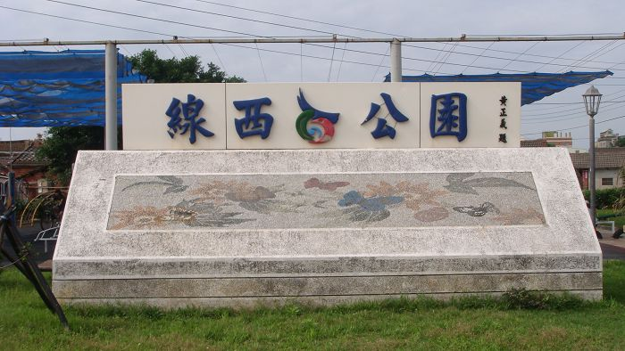
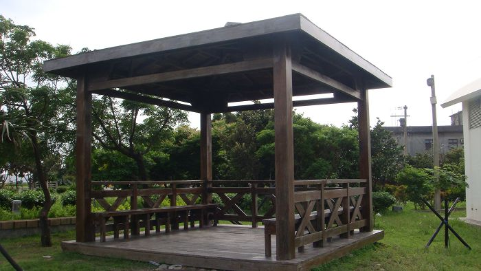
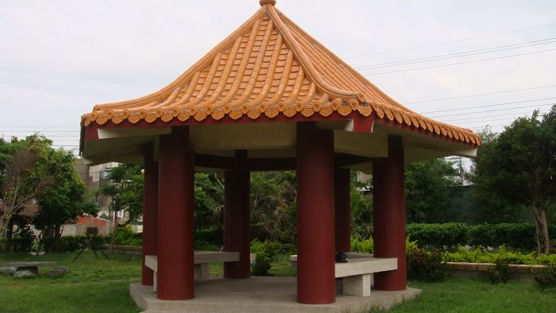
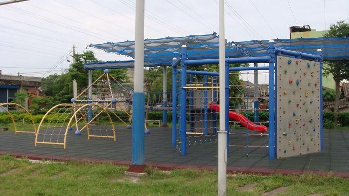
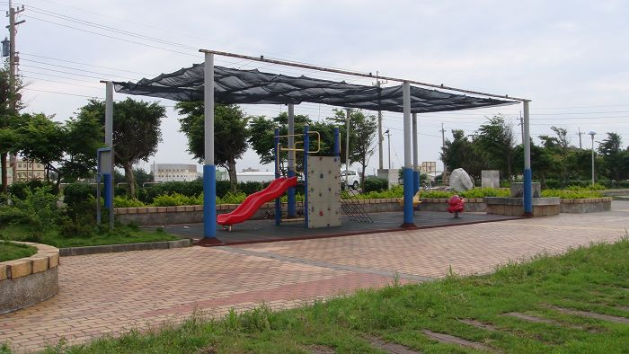
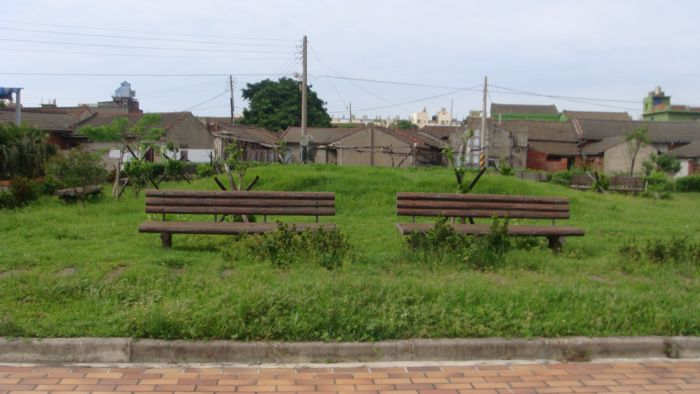
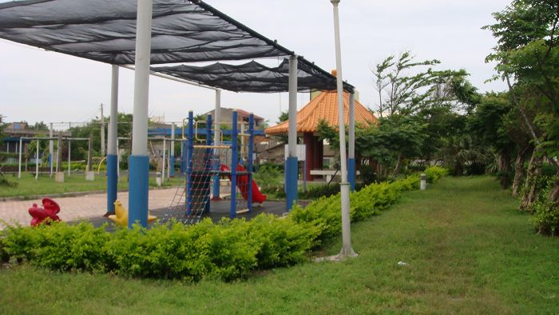
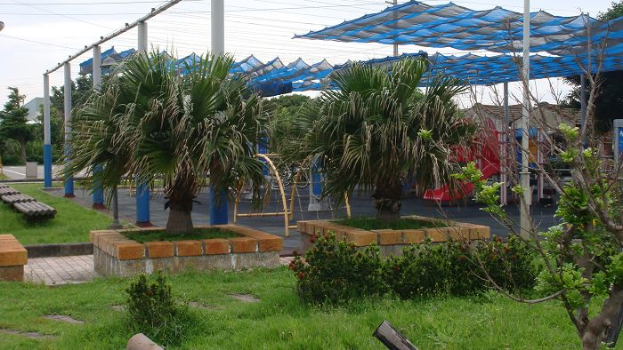

位 於 線 西 鄉 寓 埔 村 的 線 西 公 園 ， 其 位 置 鄰 寓 埔 路與 沿 海 路 ， 面 積 約 8
4 0 0 平 方 公 尺 ， 原 為 一 座 廢 棄 魚 池 ， 今 前 鄉 長 黃 正 義 闢 建 完 成 。 雖 然 本 鄉 公 共 資
源 屈 指 可 數， 但 是 東 西 不 再 於 多 只 在 於 精 ， 而 且 空 氣 清 新 無 汙 染， 是 假 日 休 閒 遊 玩 的
好 去 處 。
 
在 這 裡 ， 如 果 你 走 累 了 ， 公 園 裡 處 處 可 見 涼 亭 ， 你 可 在 這 吹 著 微 微 的
風 ， 聽 聽 微 微 的 風 吹 著 樹 葉 所 發 出 沙 沙 的 聲 音 ， 也 可 在這 跟 親 朋 好 友 一 起 聊 天 。
在 此 附 上 幾 張 照 片 供 各 位 欣 賞 ! !
 
 

<--回寓埔村首頁 |